The four objectives share the trainer, the rollout collector and the value head, and follow the standard PPO configuration of CleanRL and Stable-Baselines3. They differ only in the policy loss.
The public KLip-PPO W&B project contains the run histories, configs, logs, metrics, and checkpoints behind these plots.
| shared configuration | value |
|---|---|
| actor-critic | \(64\)-\(64\) \(\tanh\), orthogonal init |
| advantages | GAE, \(\gamma=0.99\), \(\lambda=0.95\) |
| optimiser | Adam, \(3\times10^{-4}\), linear annealing |
| rollout | \(2048\) steps, \(K=10\) epochs, minibatch \(64\) |
| normalisation | observations and rewards |
| variant | trust-region knob |
|---|---|
| PPO-Clip | \(\epsilon = 0.2\) |
| fixed-\(\beta\) PPO-KL | \(\beta = 1\) |
| adaptive-\(\beta\) PPO-KL | target \(D_{\mathrm{KL}} = 0.02\) |
| per-sample PPO-KL | \(\beta_t=-w\hat A\) on \(\mathcal I_{\mathrm{kill}}\) (Theorem 1) |
Theorem 1 predicts that PPO-Clip and the per-sample KL surrogate trace the same learning curve. The lines below are the logged returns over training; the scalar-\(\beta\) baselines fall behind on the tasks that move the policy farthest from initialisation.
PPO-Clip and per-sample KL agree on every task. Fixed and adaptive \(\beta\) match on the easier tasks but fall behind on Ant and Humanoid, where the policy must travel far from its initialisation and the trust region does real work.
The per-sample identity explains the shortfall. Clipping constrains each sample on its own terms, turning the penalty on only for the transitions whose ratio has left the band and scaling it by that sample's ratio and advantage. A scalar \(\beta\) applies one value to every sample: large enough to restrain the few runaway transitions, it over-penalises the many well-behaved ones, so no single value reproduces what the clip does pointwise.
| task | PPO-Clip | per-sample | fixed \(\beta\) | adaptive \(\beta\) |
|---|
Mean \(\pm\) std over 5 seeds, last 10% of training. PPO-Clip and per-sample KL coincide exactly: the per-sample coefficient reproduces the clip's gradient at every step, so the two columns are identical.
The penalty \(\beta_t\) is non-zero only on \(\mathcal I_{\mathrm{kill}}\). Its peak reach over training grows with task difficulty, exceeding half the batch on Humanoid, exactly where a scalar \(\beta\) cannot keep up.
PPO-Clip (left) and per-sample KL (right) on every task; the two panels are indistinguishable.
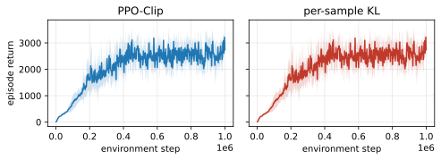
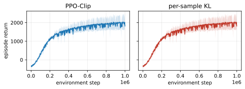
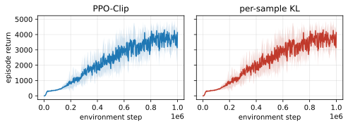
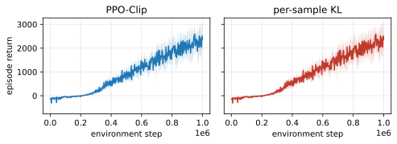
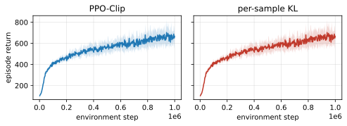
Episode return on each MuJoCo task. PPO-Clip and per-sample KL coincide; the scalar baselines trail on Ant and Humanoid.
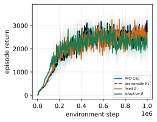
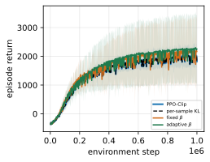
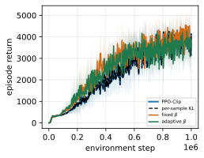
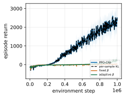
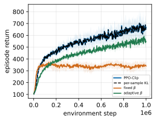
Fraction of the PPO-Clip batch in \(\mathcal I_{\mathrm{kill}}\) and \(\mathcal I_{\mathrm{pass}}\) over training. The penalty \(\beta_t\) acts only on the kill set.
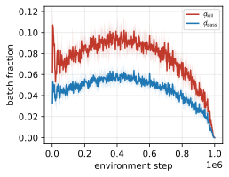
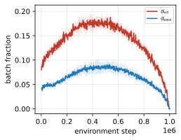
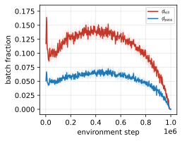
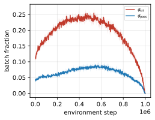
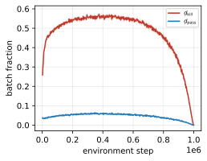
\(\beta_t\) over training: zero in median, with negative tails on the kill set that widen on the harder tasks.
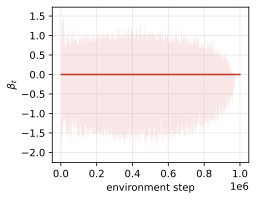
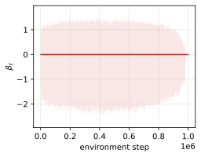
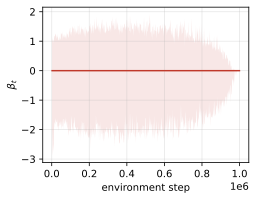
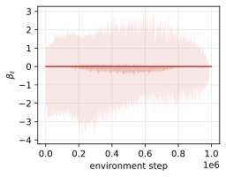
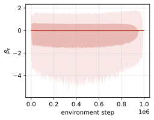
All of the above is in the paper.